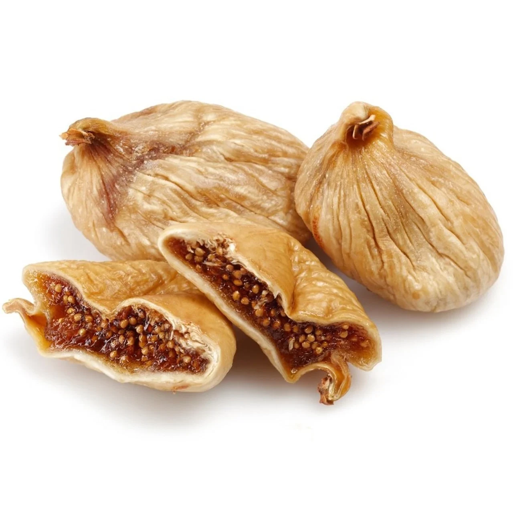

Aydın, Aegean region
Dried Fig
Whole natural figs, sun-dried and hand-graded into eight grades, from Lerida and Protoben to diced. Soft, honeyed and packed without additives.
Formats: 200 g / 500 g retail · 5 kg catering · 10 kg bulk
Full specification →